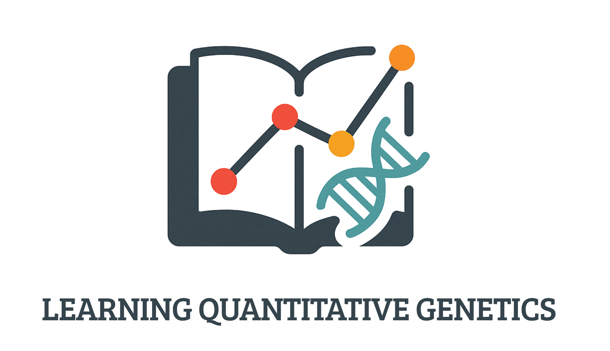

#| '!! shinylive warning !!': |
#| shinylive does not work in self-contained HTML documents.
#| Please set `embed-resources: false` in your metadata.
#| standalone: true
#| viewerHeight: 600
webr::install.packages("shiny", "ggplot2", "dplyr")
library(shiny)
library(ggplot2)
library(dplyr)
ui <- fluidPage(
titlePanel("Genetic Models Simulator"),
tabsetPanel(
# Aba 1 - F∞ Model
tabPanel("Additive-Dominance Model",
tags$head(
tags$style(HTML("
.irs-bar,
.irs-bar-edge,
.irs-single {
background: #08bf11 !important;
border-color: #08bf11 !important;
}
.centered-table {
display: flex;
justify-content: center;
margin-top: 30px;
}
.centered-table table {
text-align: center;
border-collapse: collapse;
}
.dominance-text {
margin-top: 20px;
text-align: center;
font-size: 16px;
font-weight: bold;
}
"))
),
sidebarLayout(
sidebarPanel(
sliderInput("p", "Allele A frequency (p):", min = 0, max = 1, value = 0.5, step = 0.01),
sliderInput("a", "Additive effect (a):", min = -20, max = 20, value = 5, step = 1),
sliderInput("d", "Dominance effect (d):", min = -20, max = 20, value = 0, step = 1),
numericInput("mu", "Midpoint (μ):", value = 10),
textOutput("dominanceType"),
tableOutput("summaryTable")
),
mainPanel(
plotOutput("genoPlot", height = "300px"),
plotOutput("variancePlot", height = "300px"),
tableOutput("freqTable"),
tableOutput("genotypeTable")
)
)
),
# Aba 2 - Additive-Dominance-Epistasis Model
tabPanel("Additive-Dominance-Epistasis Model",
sidebarLayout(
sidebarPanel(
numericInput("mu2", "Midpoint (μ):", value = 100),
h4("Additive Effects:"),
numericInput("aA", "Effect of A allele:", value = 0),
numericInput("aa", "Effect of a allele:", value = 0),
numericInput("bB", "Effect of B allele:", value = 0),
numericInput("bb", "Effect of b allele:", value = 0),
h4("Dominance Effects:"),
numericInput("dA", "Dominance (Aa):", value = 0),
numericInput("dB", "Dominance (Bb):", value = 0),
h4("Epistasis Effects:"),
numericInput("epi_AB", "Epistasis (A×B):", value = 0),
numericInput("epi_Ab", "Epistasis (A×b):", value = 0),
numericInput("epi_aB", "Epistasis (a×B):", value = 0),
numericInput("epi_ab", "Epistasis (a×b):", value = 0)
),
mainPanel(
plotOutput("linePlot")
)
)
)
)
)
server <- function(input, output) {
# ====== Parte F∞ Model ======
output$genoPlot <- renderPlot({
a <- input$a
d <- input$d
p <- input$p
mu <- input$mu
q <- 1 - p
geno <- c("AA", "Aa", "aa")
value <- c(mu + a, mu + d, mu - a)
freq <- c(p^2, 2*p*q, q^2)
df <- data.frame(
Genotype = factor(geno, levels = geno),
Value = value,
Freq = freq
)
ggplot(df, aes(x = Genotype, y = Value)) +
geom_point(aes(size = Freq), color = "#08bf11") +
geom_line(aes(group = 1), color = "black") +
scale_size_continuous(name = "Frequency", range = c(2, 10)) +
labs(x = " ", y = "Genotypic Value (GV)") +
theme_minimal() +
theme(text = element_text(size = 16)) +
ylim(min(df$Value) - 1, max(df$Value) + 1)
})
output$variancePlot <- renderPlot({
a <- input$a
d <- input$d
p_seq <- seq(0, 1, by = 0.01)
q_seq <- 1 - p_seq
alpha_seq <- a + d * (p_seq - q_seq)
VA <- 2 * p_seq * q_seq * alpha_seq^2
VD <- (2 * p_seq * q_seq * d)^2
VG <- VA + VD
df_var <- data.frame(p = p_seq, VA = VA, VD = VD, VG = VG)
ggplot(df_var, aes(x = p)) +
geom_line(aes(y = VA, color = "Additive Variance"), size = 1.2) +
geom_line(aes(y = VD, color = "Dominance Variance"), size = 1.2) +
geom_line(aes(y = VG, color = "Genotypic Variance"), size = 1.2) +
geom_vline(xintercept = input$p, linetype = "dashed", color = "gray30") +
scale_color_manual(
name = "Variance Component",
values = c("Additive Variance" = "red", "Dominance Variance" = "orange", "Genotypic Variance" = "#08bf11"),
labels = c(expression(sigma[a]^2), expression(sigma[d]^2), expression(sigma[g]^2))
) +
labs(x = "Frequency (p)", y = "Variance") +
theme_minimal() +
theme(text = element_text(size = 16))
})
output$summaryTable <- renderTable({
a <- input$a
d <- input$d
p <- input$p
mu <- input$mu
q <- 1 - p
alpha <- a + d * (p - q)
mu_g <- p^2 * (mu + a) + 2 * p * q * (mu + d) + q^2 * (mu - a)
var_A <- 2 * p * q * alpha^2
var_D <- (2 * p * q * d)^2
var_T <- var_A + var_D
alpha_A <- q * alpha
alpha_a <- -p * alpha
data.frame(
Description = c(
"Average effect of gene substitution",
"Allelic substitution effect A",
"Allelic substitution effect a",
"Genotypic mean",
"Additive variance",
"Dominance variance",
"Genotypic variance"
),
Value = round(c(alpha, alpha_A, alpha_a, mu_g, var_A, var_D, var_T), 4),
check.names = FALSE
)
})
output$dominanceType <- renderText({
a <- input$a
d <- input$d
if (a == 0) {
return("Indeterminate (a = 0)")
} else if (d == 0) {
return("No dominance")
} else if (d > 0 && d < a) {
return("Partial dominance")
} else if (d == a) {
return("Full dominance")
} else if (d > a) {
return("Overdominance")
} else if (d < 0) {
return("Negative dominance")
} else {
return("Undefined")
}
})
output$genotypeTable <- renderTable({
a <- input$a
d <- input$d
p <- input$p
mu <- input$mu
q <- 1 - p
alpha <- a + d * (p - q)
mu_g <- p^2 * (mu + a) + 2 * p * q * (mu + d) + q^2 * (mu - a)
data.frame(
Genotype = c("AA", "Aa", "aa"),
Frequency = round(c(p^2, 2 * p * q, q^2), 4),
`GV` = c(mu + a, mu + d, mu - a),
`GV - μg` = round(c((mu + a) - mu_g, (mu + d) - mu_g, (mu - a) - mu_g), 4),
`Additive Value` = round(c(2 * q * alpha, alpha * (q - p), -2 * p * alpha), 4),
`Dominance Value` = round(c(-2 * q^2 * d, 2 * p * q * d, -2 * p^2 * d), 4),
check.names = FALSE
)
})
# ====== Parte Modelo A×B com Epistasia ======
output$linePlot <- renderPlot({
geno_combinations <- expand.grid(geno_A = c(0,1,2), geno_B = c(0,1,2))
get_add <- function(g, major, minor) {
ifelse(g == 0, 2 * minor,
ifelse(g == 1, major + minor,
2 * major))
}
get_dom <- function(g, dom_effect) {
ifelse(g == 1, dom_effect, 0)
}
geno_combinations <- geno_combinations %>%
mutate(
add_A = get_add(geno_A, input$aA, input$aa),
add_B = get_add(geno_B, input$bB, input$bb),
dom_A = get_dom(geno_A, input$dA),
dom_B = get_dom(geno_B, input$dB),
epi = case_when(
geno_A == 2 & geno_B == 2 ~ input$epi_AB,
geno_A == 2 & geno_B == 0 ~ input$epi_Ab,
geno_A == 0 & geno_B == 2 ~ input$epi_aB,
geno_A == 0 & geno_B == 0 ~ input$epi_ab,
TRUE ~ 0
),
GV = input$mu2 + add_A + add_B + dom_A + dom_B + epi
)
convert_A <- function(g) ifelse(g == 0, "aa", ifelse(g == 1, "Aa", "AA"))
convert_B <- function(g) ifelse(g == 0, "bb", ifelse(g == 1, "Bb", "BB"))
geno_combinations$Genotype <- paste(convert_A(geno_combinations$geno_A),
convert_B(geno_combinations$geno_B),
sep = " ")
ggplot(geno_combinations, aes(x = Genotype, y = GV, group = 1)) +
geom_line(color = "#1b9e77", size = 1.5) +
geom_point(size = 3, color = "#1b9e77") +
theme_minimal(base_size = 14) +
labs(x = "Genotype", y = "Value", title = "Genetic Model Simulator") +
theme(plot.title = element_text(hjust = 0.5, face = "bold"))
})
}
shinyApp(ui, server)